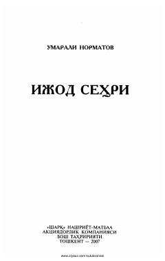

ISO'zbek adabiyotshunosligining yirik vakili Umarali Normatovning adabiy-tanqidiy maqolalar va esseslar to'plami.
Tanqidchi va adabiyotshunos Umarali Normatovning ushbu kitobi yangi o'zbek adabiyotining o'ziga xos xususiyatlari, murakkab taraqqiyot yo'llari, yorqin siymolari va nodir namunalariga bag'ishlangan. Shuningdek, unda adabiy ta'lim, mutolaa masalalari haqidagi tadqiqotlar, esseslar, xotiralar va suhbatlar o'rin olgan. Muallif badiiy ijodning sirli-sehrli jumboqlari hamda adabiy jarayonning dolzarb muammolari ustida fikr yuritadi.